Dentes pequenos para o seu sorriso
Deixam a sua aparência infantilizada e não combinam com o momento que você vive.
Lentes de resina e de porcelana e reabilitação oral planejadas sob medida, para um sorriso harmônico, com a sua cara e preservando ao máximo os seus dentes.
 Dra. Laíse Cândido · CRO-SC 16246
Dra. Laíse Cândido · CRO-SC 16246

Deixam a sua aparência infantilizada e não combinam com o momento que você vive.
Com o tempo, o desgaste e a cor envelhecem o sorriso, e ele deixa de parecer com você.
Opacas ou com cor diferente dos outros dentes, elas aparecem em cada foto.
Você quer um sorriso mais bonito, mas não quer dentes com cara de artificial.
O sorriso interfere na segurança com que você se apresenta no trabalho, nas relações e nas fotos com quem você ama. Cuidar dele também é cuidar de como você se sente.
As lentes são lâminas finas aplicadas na parte da frente dos dentes para ajustar cor, formato e tamanho. Elas podem ser feitas em resina ou em porcelana, e as duas são boas opções quando bem indicadas.
Na avaliação, você define junto o material, em quais dentes as lentes vão entrar e se vale a pena clarear antes. Tudo pensado para um resultado harmônico, natural e que preserve ao máximo os seus dentes.
Formato, cor e tamanho pensados para o seu rosto, para que o sorriso tenha a sua cara.
O desgaste do dente é o mínimo necessário, e às vezes nem é preciso.
Antes de começar, você vai provar o seu novo sorriso.
Cada tratamento foi planejado para uma pessoa diferente. Os resultados variam de caso para caso.
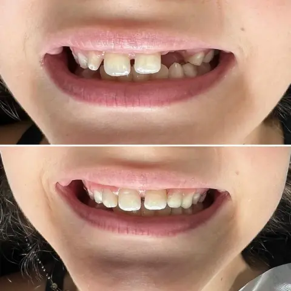
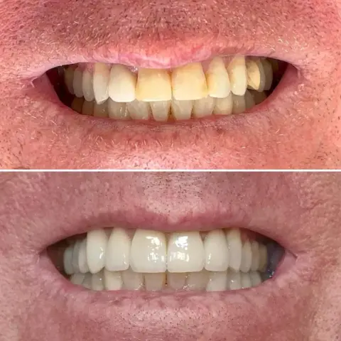
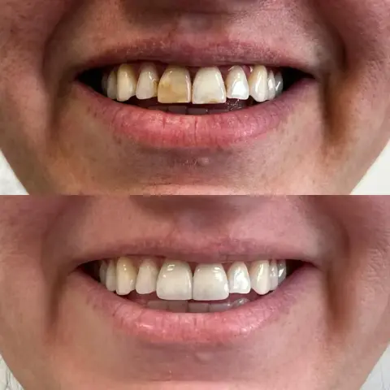
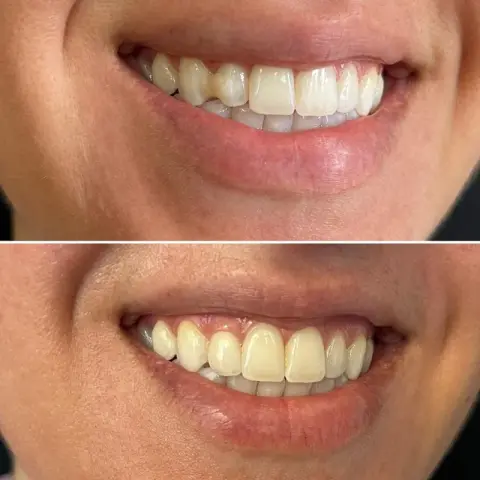
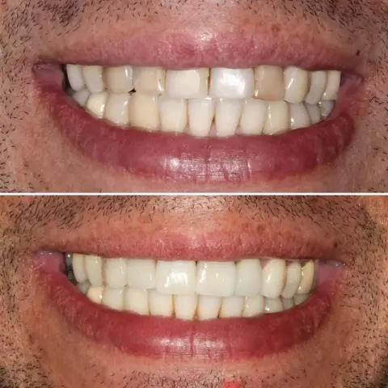
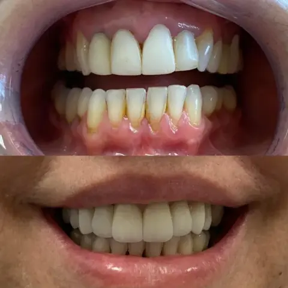
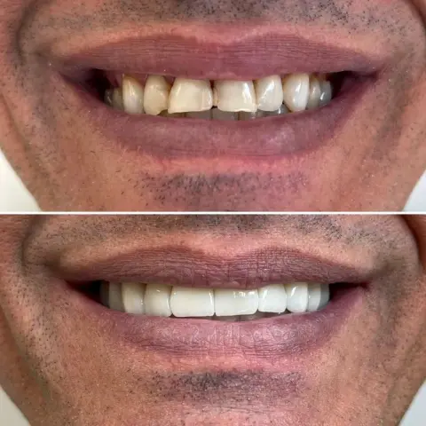
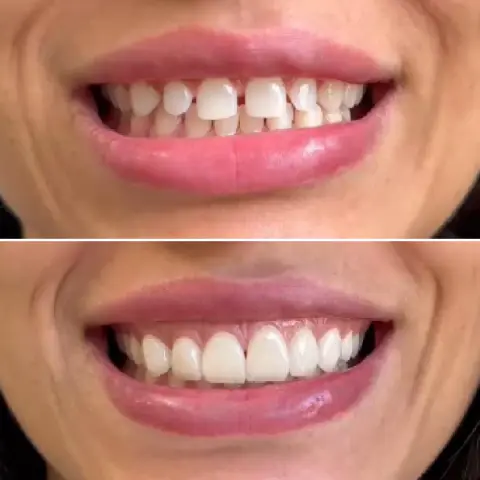
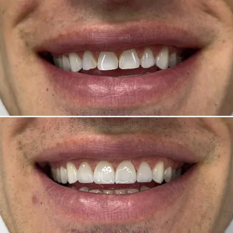
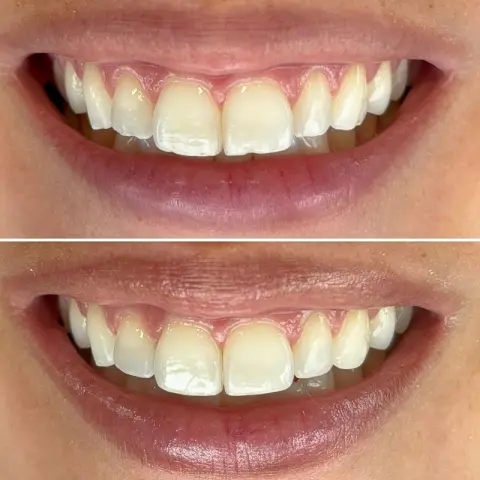
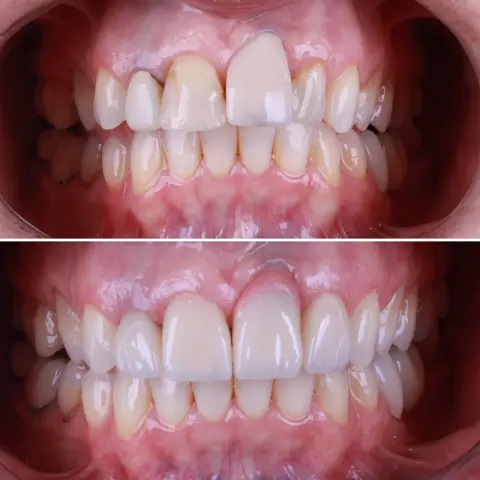
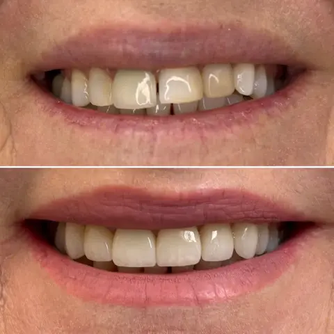
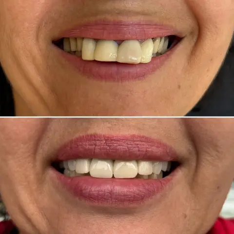
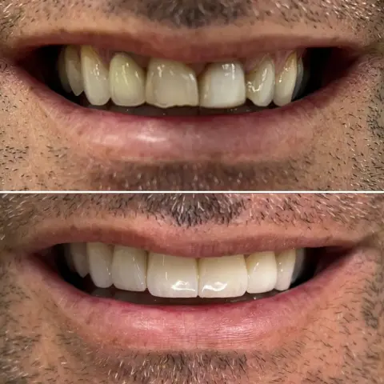
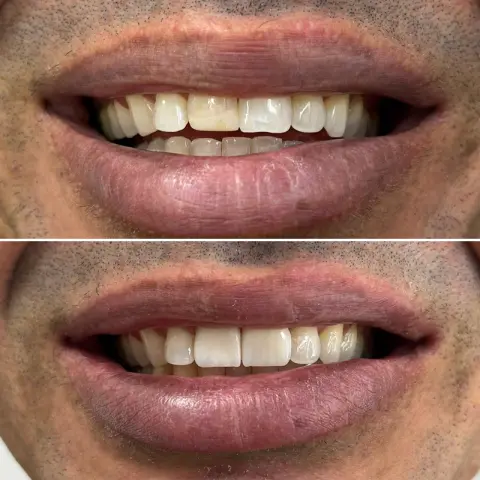
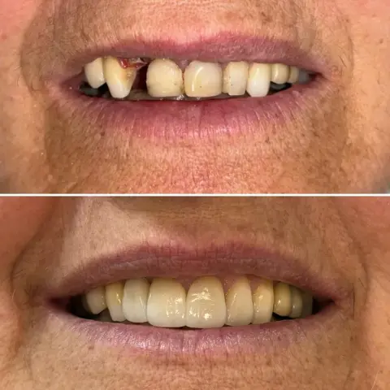
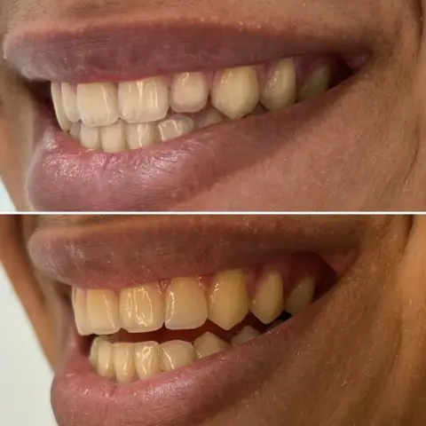
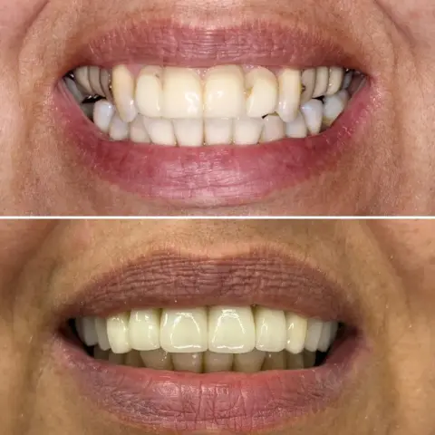
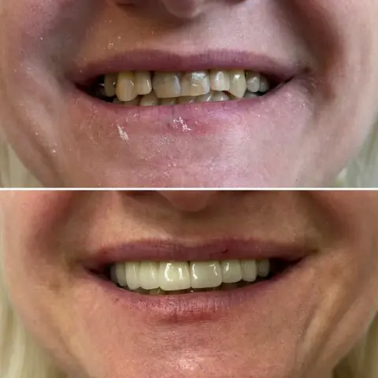
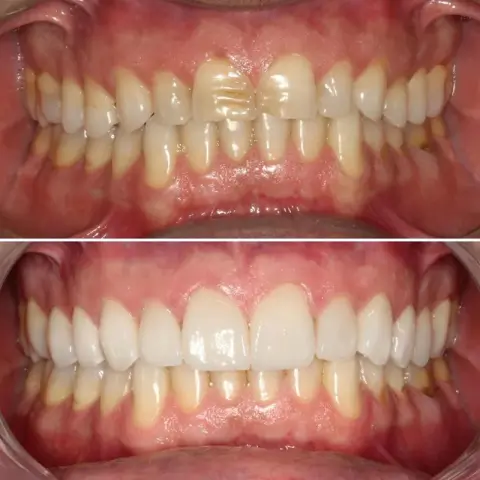
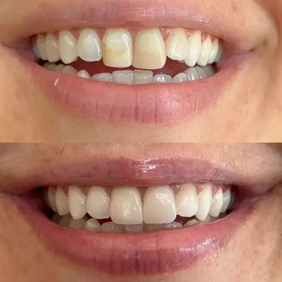
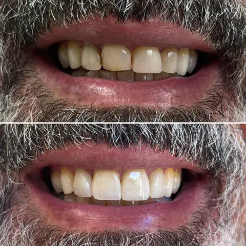
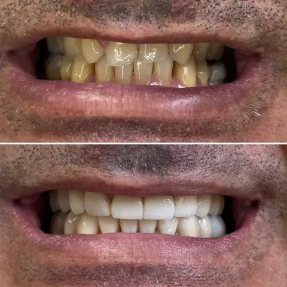
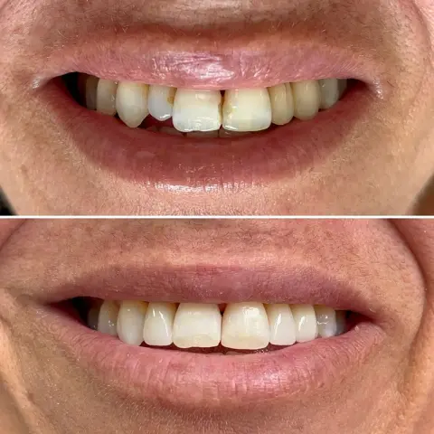
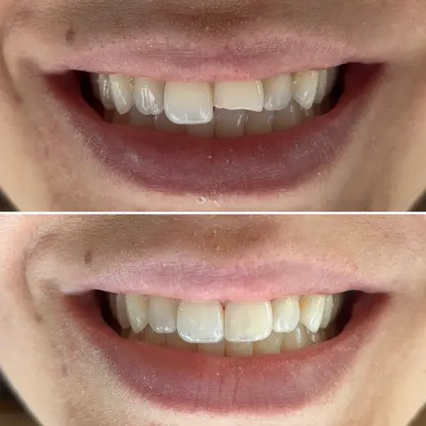
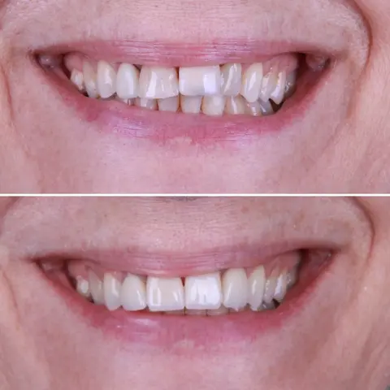
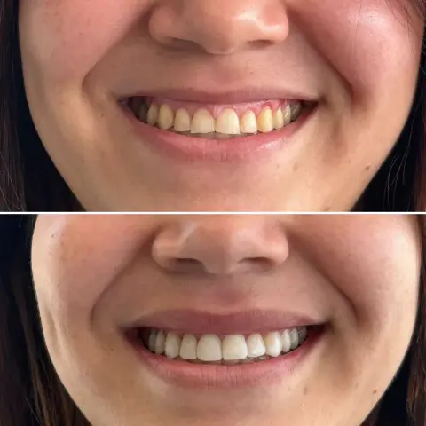
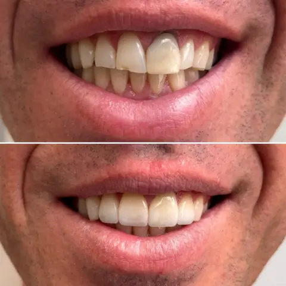
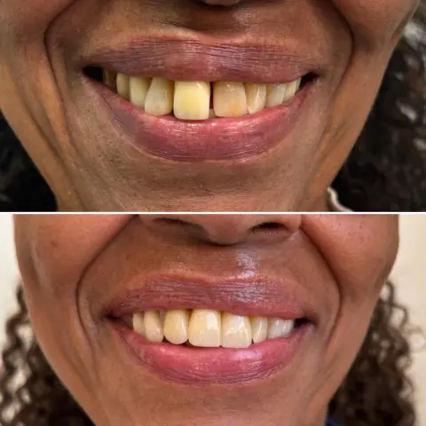
Clique para expandir
Tratamentos realizados pela Dra. Laíse Cândido · CRO-SC 16246
Reabilitar é devolver ao sorriso o que ele perdeu com o tempo: a estética, a função e a saúde. E, junto com elas, a segurança de sorrir.
Em alguns casos, isso envolve outras etapas antes das lentes ou das coroas, como tratamento de canal, implante, ortodontia, cuidado com a gengiva ou harmonização orofacial. Tudo isso é resolvido na própria clínica, que reúne os profissionais de cada área: você não precisa ir a outro lugar para nenhuma etapa. O tratamento é planejado como um todo, com acompanhamento em cada etapa, para que tudo se encaixe no resultado final.
Um sorriso bonito, que funciona bem no dia a dia e se mantém saudável.
Sempre que possível, o tratamento recupera os seus dentes naturais antes de substituí-los.
O seu caso é acompanhado por inteiro, da avaliação à última etapa.

Cada tratamento começa por uma conversa e segue no seu ritmo. Você entende cada passo e decide junto.
Antes de qualquer proposta, a primeira consulta é para ouvir você: o que deseja mudar, o que incomoda e a sua história.
Com fotos, escaneamento digital e exames, a saúde dos seus dentes é avaliada, e você entende o que foi encontrado e por quê.
No planejamento digital, você vê como o seu sorriso vai ficar. Depois, prova o projeto na boca para avaliar a estética e a função. Assim, os ajustes são feitos antes do resultado definitivo, que chega sem surpresas. A conversa é sincera: nada é prometido além do que o tratamento pode entregar.
As etapas são organizadas de acordo com a sua rotina. Se você tem uma data importante pela frente, conte na avaliação, e o planejamento leva isso em conta.

Se você vem adiando o cuidado com os dentes por medo, saiba que isso é levado a sério aqui. Você é recebido sem julgamentos, tudo é conversado antes de acontecer, e suas ansiedades são respeitadas. Para quem sente muita ansiedade, existe a sedação com óxido nitroso, além de diversas técnicas empregadas para tornar a experiência o mais confortável possível.
Quero agendar minha avaliação“Laíse é uma dentista que tem muita técnica e primor em seu trabalho, vive estudando e se atualizando, mas se destaca ainda mais pelo acolhimento e afeto com que trata os pacientes! Respeita os horários, tem uma escuta excelente e não vende tratamentos estéticos que não façam sentido (pelo contrário). Sou paciente há 6 anos e recomendo muito o trabalho cuidadoso e atencioso dela!”
“Já sou paciente da Dra Laise a alguns anos e o trabalho dela é impecável! Sempre me deixa a vontade, mão super leve e realmente aconselha o melhor para o paciente. Indico de olhos fechados!”
“A Dra Laise é uma excelente profissional !!! Muito atenciosa e muito competente. Tenho muito medo de vir no dentista mas com ela esse medo tem diminuído muito. Não troco mais de dentista e indico para todos..”
“A primeira vez que consultei com a Dra. Lais Candido foi para fazer a extração de um siso. O trabalho dela é muito bom, bem explicado, me senti segura durante todo procedimento. Também realize a restauração dos dentes, facetas de resina, e amei o resultado. Super recomendo.”
“[…] Laíse é muito acolhedora, busca entender o contexto de cada problema para sugerir - sempre com muitas informações - as melhores soluções, com carinho, habilidade e calma, evitando confusões e traumas. Até então nem achava que esse atendimento era possível, mas com ela é.”
“A Dra. Laíse é muito atenciosa no atendimento, sempre me explicando todas etapas do processo, as causas dos problemas e as melhores soluções possíveis. Me sinto super à vontade e tratada com respeito pela profissional.”
“Para mim, ter os dentes bem cuidados é sinônimo de autoestima e isso impacta diretamente em todas as áreas da minha vida. Fico muito feliz em ter encontrado uma profissional tão dedicada e competente em Florianópolis como a Dra. Laíse. Não troco por nada!”
“Minha primeira visita à Dra. Laíse foi incrível! O atendimento foi super atencioso, e ela explicou tudo de maneira simples e gentil. Me senti muito confortável e bem cuidada […]. Consultório super aconchegante.”
“[…] Fui atendida pela Dra Laíse, me senti muito bem cuidada ♥️ sem falar na massagem da cadeira durante o atendimento. Recomendo de olhos fechados.”

A Dra. Laíse Cândido atua em reabilitação oral e estética dental e acredita que um sorriso bonito precisa ser, antes de tudo, saudável e da pessoa. Possui pós-graduação em Prótese Dentária e em Dentística, e une essa base a estudo constante e a um atendimento verdadeiramente humano.
Cada detalhe importa: o planejamento é individual e baseado em evidência científica, e uma peça só é colocada quando fica como deveria. Tudo para que o resultado se mantenha bonito e saudável ao longo do tempo.
“Eu vou oferecer para você exatamente o que você precisa. Nós trabalhamos com saúde, e a gente não esqueceu disso.”
— Dra. Laíse Cândido
O atendimento é no Espaço Cora, um ambiente acolhedor pensado para que o cuidado com a saúde seja também um momento de conforto, com recepção com água e café e salas com vista.
Ed. Somma Tower
R. Dr. Carlos Corrêa, 141 · Salas 601/602Agronômica, Florianópolis/SC · CEP 88025-250
O planejamento busca um resultado natural, com formato, cor e tamanho pensados para o seu rosto. Antes de começar, você prova o seu novo sorriso e conversa sobre cada detalhe.
Depende do planejamento. Muitas vezes, o sorriso fica harmônico com lentes em menos dentes, combinadas com um clareamento. Na avaliação, você conhece as opções e decide o que faz sentido para o seu sorriso.
Depende do caso. A prioridade é preservar ao máximo os seus dentes naturais: quando o desgaste é necessário, ele é o mínimo possível, e em algumas situações, como em dentes pequenos, pode nem ser preciso.
As duas são boas opções quando bem indicadas. A escolha depende dos seus dentes, da sua mordida, do resultado que você deseja e da sua rotina, e é feita na avaliação, junto com você.
Depende do que o seu sorriso precisa. Tratamentos que envolvem implantes ou ortodontia costumam levar mais tempo. Se você tem uma data importante, conte na avaliação para que o planejamento leve isso em conta.
Tudo é conversado antes, e o tratamento segue o seu ritmo. Para quem sente muita ansiedade, existe a sedação com óxido nitroso, além de diversas técnicas empregadas para tornar a experiência o mais confortável possível.
O valor depende do plano de tratamento, que é feito sob medida depois da avaliação. Por isso, não existe um preço único. Na avaliação, você recebe todas as informações sobre o seu caso.
Não. O atendimento é particular.
Na R. Dr. Carlos Corrêa, 141, salas 601/602, no Ed. Somma Tower, na Agronômica. Há o estacionamento do mercado Angeloni na mesma rua.
Preencha seus dados e agende sua avaliação sem custo pelo WhatsApp.